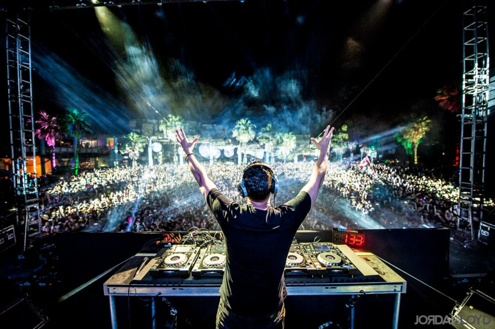
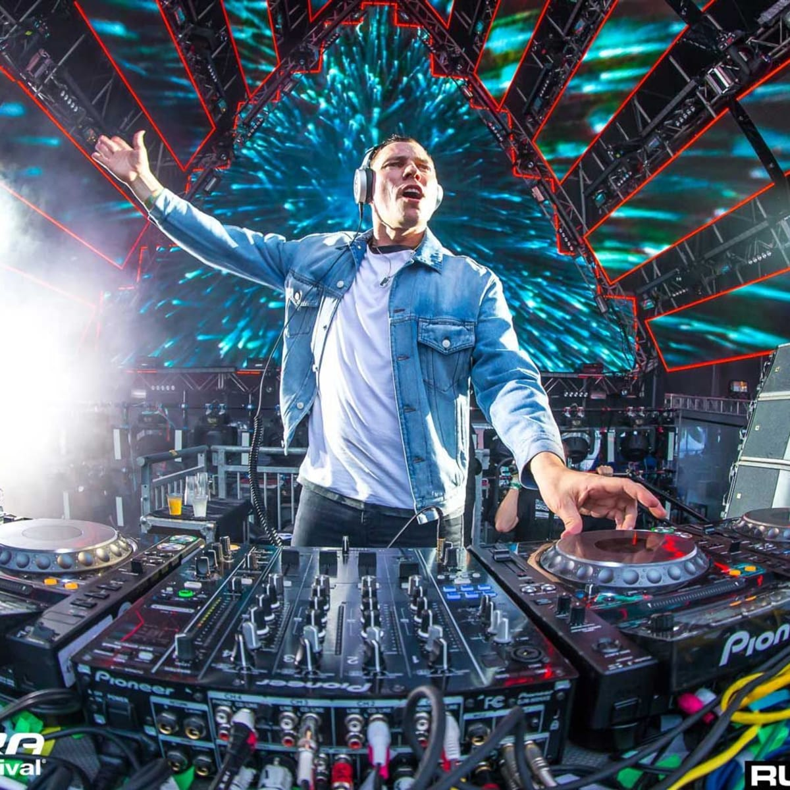

Career

The Start of a Legacy
Verwest or most commonly known as, Tiesto, has been in the House/Dance music scene since the early 90's, specifically when Eurodance music was very in all over Europe, Latin America and for some time, in parts of the States. It was during this time when artist like Gigi D'Agostino with his L'Amour Toujours, Eiffel 65 with their Blue (Da Ba Dee), and Corona with Rhythm Of The Night were hitting the disco/dance scene heavy with classics that to this day are heard worldwide. But as this genre phased out at the turn of the century, it was artist like Tiesto that rose to fame with a new refined sound to fill the club scene.

Early Successes and the 2004 Olympics
In a time when he was perhaps still only known in Europe, Tiesto hit the main stage at the 2004 Olympics in Athens. This would make him the first DJ to play at the opening ceremony of any Olympic games. His performance lasted 90 minutes and was of great notice to the athletes, especially the Dutch, who had to be pushed along by officials since they decided to stay in front of Tiesto dancing. This apperance would go on to be very impactful to the whole dance music scene. It would later be noted that Martin Garrix another Dutch EDM artist to come to the scene in 2014 was inspired by Tiesto's Olympic's performance.
Grammy Award Winning Mix and a NEW Tiesto
While Tiesto has won many awards in his career, usually prevalent in the House and EDM community, his most notable award is the prestigious Grammy Award he won for Best Remixed Recording, Non-Classical on John Legend's "All of Me" in 2015. It was around this time and a little earlier on in the decade the Tiesto made a shift in his music style from one of just Trance music (formally known as acid house) to what is now the most popular EDM genre out there, House/Dance.
He has had a number of hits like Redlight and Wasted off of his A Town Called Paradise album released in 2014. It is songs like this and others that have made him headline some of the biggest festivals in the world like Ultra in Miami and EDC in Las Vegas. In fact, since he has played so much in Vegas and currently holds residency with some nightclubs there, the city of Las Vegas gave Tiesto the key to the city in 2017.
These days Tiesto continues to grow and refine the Dance scene at the age of 52. He collaborates with many other noteable artist like the late Avicii, Martin Garrix, Steve Aoki, and many others.